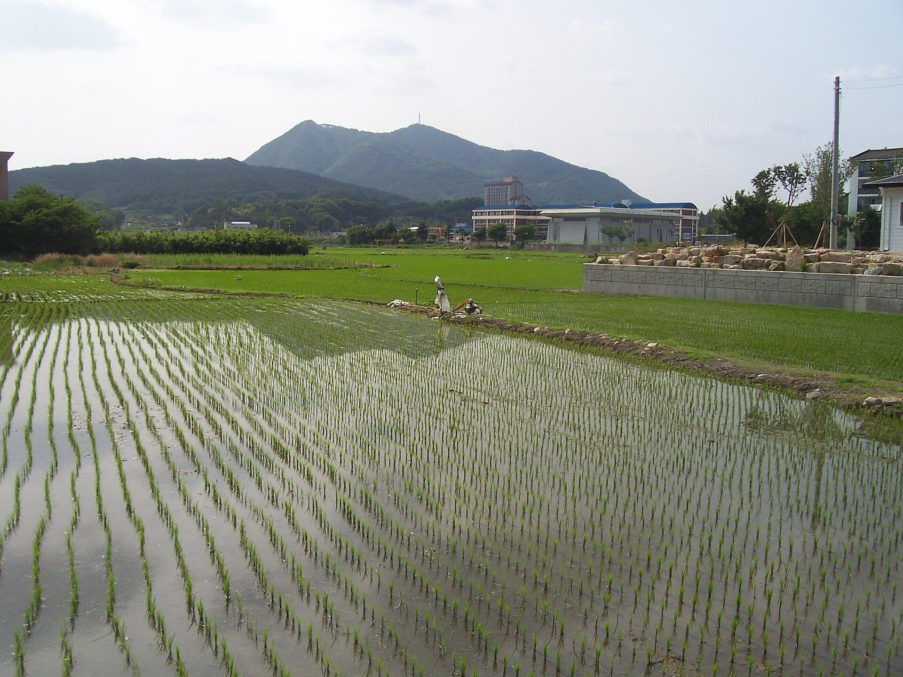
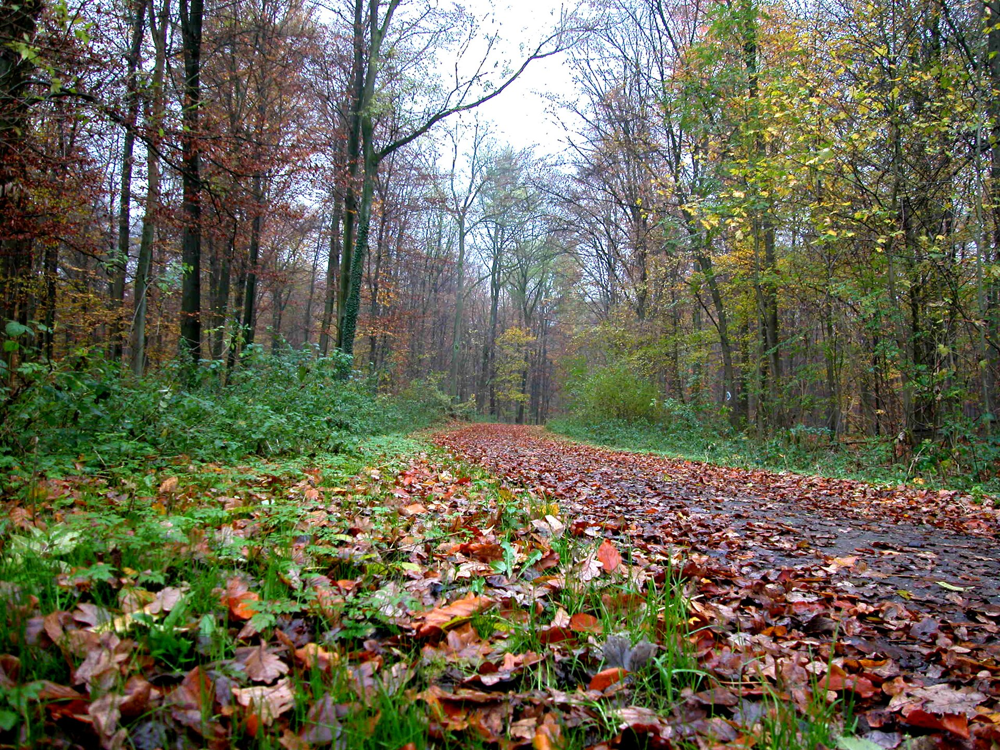
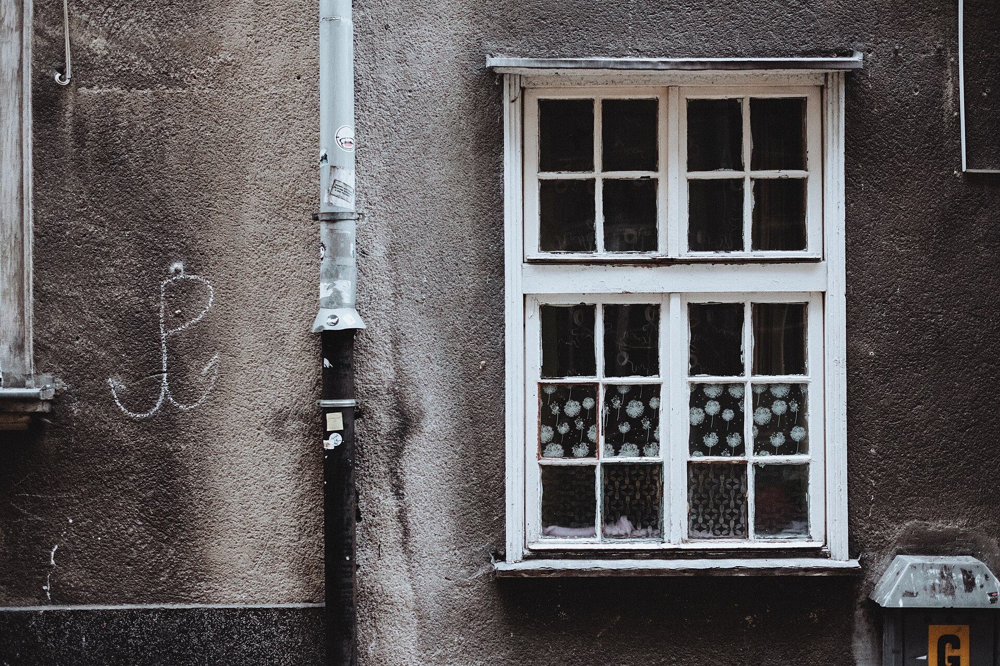
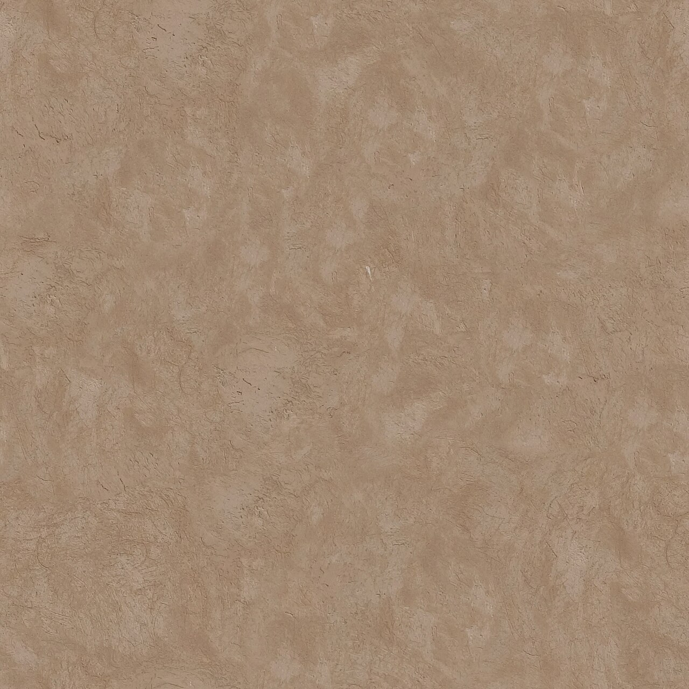

くすみの中に、ほどよい心地よさ。
中之条町伊勢町にある美容室
DULLは、群馬県吾妻郡中之条町伊勢町にある美容室です。山あいの静かな景色を思い浮かべながら、ゆったり過ごせる時間をイメージしてページをつくりました。

写真は雰囲気を伝えるイメージです
Toneくすみの階調
落ち着いた色味や質感が好きな方に、というイメージで選んだ5つの色です。
オートミール
砂ベージュ
灰桃
くすみセージ
錆テラコッタ
色はサイトのイメージであり、メニューや仕上がりを示すものではありません。


Scenery山あいの景色から



掲載写真はすべてイメージです。

最新の情報はInstagramで
日々の更新はInstagram(@waridull)でご覧いただけます。ご予約・ご相談は、お電話またはInstagramよりお問い合わせください。
営業時間: 準備中
ご予約・ご相談は、お電話またはInstagramよりお問い合わせください
営業時間などの詳細は準備中です。まずはお気軽にご連絡ください。
掲載写真はイメージです(Wikimedia Commons掲載のCC0/パブリックドメイン素材)。サンプル用のフリー素材であり、実際の店舗の写真ではありません。